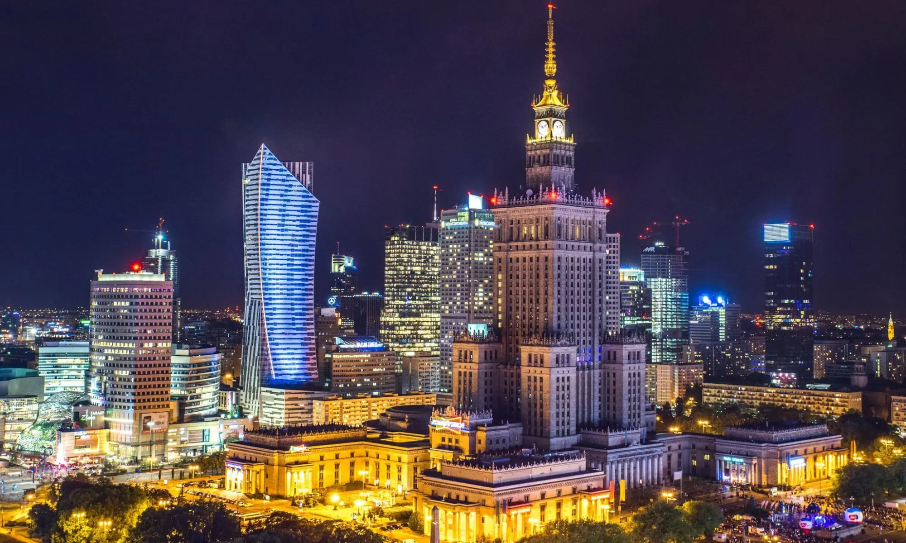
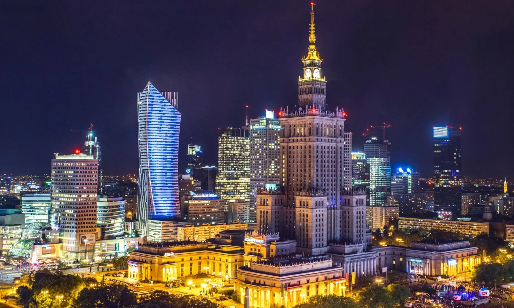

Castillo Real
Residencia histórica de los reyes de Polonia.
📍 Plaza Zamkowy
 

Residencia histórica de los reyes de Polonia.
📍 Plaza Zamkowy
Edificio más emblemático de la ciudad.
📍 Centro
Memoria histórica de Varsovia.
📍 Wola
El parque más famoso de la ciudad.
📍 Distrito Sur